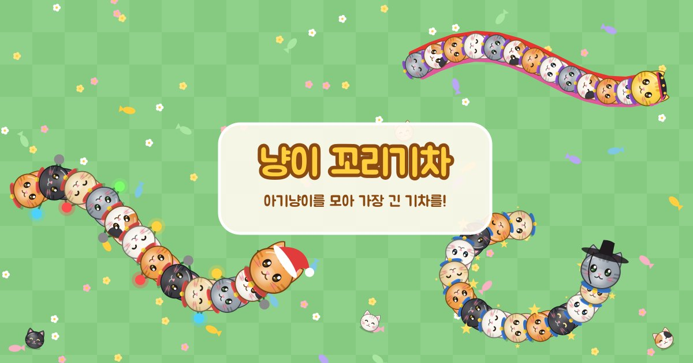

냥이 꼬리기차
냥이 꼬리기차

플레이 방법
처음 해 보는 분도 1분이면 익힐 수 있어요. 규칙은 단순하지만, 다른 기차와 부딪히지 않고 길게 키우는 데 요령이 필요해요.
1. 시작하기
첫 화면에서 대장 냥이의 털색을 고르고, 게임 안에서 보일 이름(8글자까지)을 적은 뒤 출발!을 눌러요. 이름은 비워 두어도 괜찮아요. 고른 털색과 이름은 다음에 들어와도 그대로 남아 있어요.
2. 조작법
| 휴대폰·태블릿 | 화면에 손가락을 대고 가고 싶은 쪽으로 움직이면 대장 냥이가 그쪽으로 방향을 틀어요. 손가락을 떼도 냥이는 계속 앞으로 걸어가요. 화면을 두 번 톡톡 친 뒤 그대로 누르고 있으면 달려요. 손을 떼면 멈춰요. |
|---|---|
| PC | 마우스 포인터를 가고 싶은 곳에 두면 따라가요. 왼쪽 버튼을 누르고 있거나 스페이스바를 누르고 있으면 달려요. 키보드 ← → 방향키로도 방향을 바꿀 수 있어요. |
💻 휴대폰으로도 할 수 있지만, PC에서 하면 화면이 넓어 주변 기차와 아기냥이가 훨씬 많이 보여서 더 재밌어요. 마우스로 방향을 바꾸는 것도 손가락보다 정확해요.
3. 놀이터에 있는 것들
- 🐟생선 간식먹으면 화면 왼쪽 위 게이지가 한 칸 차요. 다섯 칸이 모두 차면 아기냥이 한 마리가 새로 기차에 붙어요. 반짝이는 황금 생선은 세 칸이 한꺼번에 차요.
- 🐱길 잃은 아기냥이놀이터 곳곳을 서성이는 아기냥이에게 닿으면 바로 기차에 붙어요. 다른 기차가 부딪혀 흩어진 아기냥이도 마찬가지예요. 큰 사고가 난 자리는 아기냥이를 잔뜩 모을 기회예요.
- 🍄보라 독버섯먹으면 꼬리 쪽 아기냥이 두 마리가 놀라서 도망가요. 흰 점이 박힌 보라색 버섯이 보이면 피해 가세요.
- 🧅굴러다니는 양파독버섯보다 크고, 이리저리 굴러다녀서 피하기가 더 어려워요. 먹으면 기차의 절반이 흩어져요. 긴 기차일수록 더 조심해야 해요.
- 🚂다른 기차다른 사람과 컴퓨터 냥이의 기차예요. 이름 앞에 🤖가 붙은 것이 컴퓨터 냥이, 노란 이름이 다른 사람이에요. 아기냥이 목걸이 색으로 어느 기차인지 구분할 수 있어요.
4. 이렇게 되면 끝나요
- 대장 냥이 머리가 다른 기차의 몸에 부딪히면 내 기차가 흩어지고 이번 판이 끝나요.
- 놀이터 바깥 울타리에 부딪혀도 끝나요. 오른쪽 아래 작은 지도에서 내 위치(주황 점)를 확인하세요.
- 내 몸에는 부딪혀도 괜찮아요. 마음껏 똬리를 틀어도 돼요.
판이 끝나면 최대 기차 길이, 이번 판 순위, 버틴 시간이 나와요. 다시 출발!을 누르면 새 기차로 처음부터 시작해요.
5. 달리기 쓰는 법
달리는 동안에는 간식 게이지가 줄어들어요. 게이지를 다 쓰고도 계속 달리면 꼬리 끝의 아기냥이를 한 마리씩 흘리게 돼요. 짧게 끊어서, 꼭 필요할 때만 쓰는 것이 좋아요.
6. 오래 살아남는 요령
처음에는 가장자리부터
기차가 짧을 때는 큰 기차들이 몰려 있는 한가운데보다 조금 한적한 곳에서 간식과 아기냥이를 모으세요. 다만 울타리에 너무 붙으면 방향을 틀 공간이 없어요.
머리 앞을 비워 두기
끝나는 이유는 거의 항상 내 머리가 남의 몸에 닿는 경우예요. 다른 기차와 나란히 갈 때는 내 머리 앞쪽에 그 기차의 몸이 들어올 수 있는지 먼저 살펴요.
긴 기차는 감싸기
기차가 길어지면 몸으로 원을 그려 다른 기차를 안에 가둘 수 있어요. 갇힌 기차가 내 몸에 부딪히면 그 아기냥이들이 쏟아져요. 단, 원을 닫는 순간 내 머리가 다른 기차에 닿지 않게 조심하세요.
사고 현장은 빠르게, 하지만 침착하게
기차가 흩어진 자리에는 아기냥이가 잔뜩 떨어져요. 여러 기차가 한꺼번에 몰려드니, 달리기로 먼저 도착하되 다른 기차의 몸 사이로 무리하게 파고들지 마세요.
양파는 움직이는 방향을 보고 피하기
양파는 한 방향으로 굴러가다 울타리에서 튕겨요. 지금 위치가 아니라 잠시 뒤 굴러올 자리를 피해서 지나가세요.
7. 같이 하기와 혼자 하기
접속하면 자동으로 같은 놀이터 서버에 들어가 다른 사람들과 함께 놀아요. 서버에 연결할 수 없거나 서버가 쉬는 동안에는, 컴퓨터 냥이들만 있는 놀이터에서 혼자 놀 수 있어요. 첫 화면에 “👥 다른 사람들과 같은 놀이터에서 놀아요”가 보이면 같이 하기 상태예요.
8. 냥이 꾸미기
첫 화면의 🎀 냥이 꾸미기를 누르면 모자 9가지, 대장 냥이 특별 털색 4가지, 꼬리 장식 6가지를 볼 수 있어요. 크리스마스, 연말·설날, 한국, 세계 느낌으로 골랐어요.
- 짧은 광고를 한 번 보면 이번에 들어와 있는 동안 모든 꾸미기를 마음대로 골라 쓸 수 있어요. 광고를 끝까지 보지 않으면 열리지 않아요.
- 고른 꾸미기는 이 기기의 브라우저에 저장돼서 다음에 와도 그대로 쓰고 있어요. 다시 들어와서 다른 것으로 바꾸려면 광고를 한 번 더 보면 돼요.
- 쓰는 중인 모자나 꼬리 장식을 한 번 더 누르면 벗어요.
- 같이 하기에서는 다른 사람에게도 내 꾸미기가 보여요. 꾸미기는 모양만 바뀌고 속도나 크기에는 영향이 없어요.